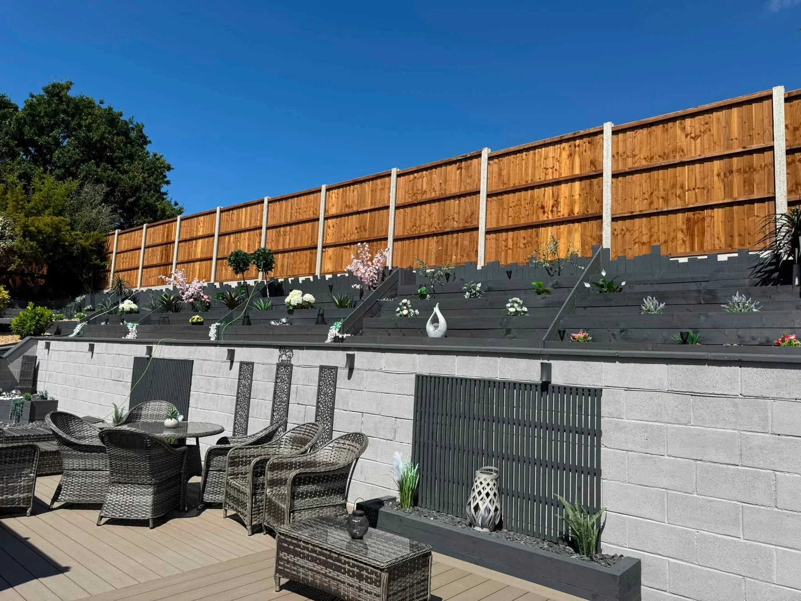
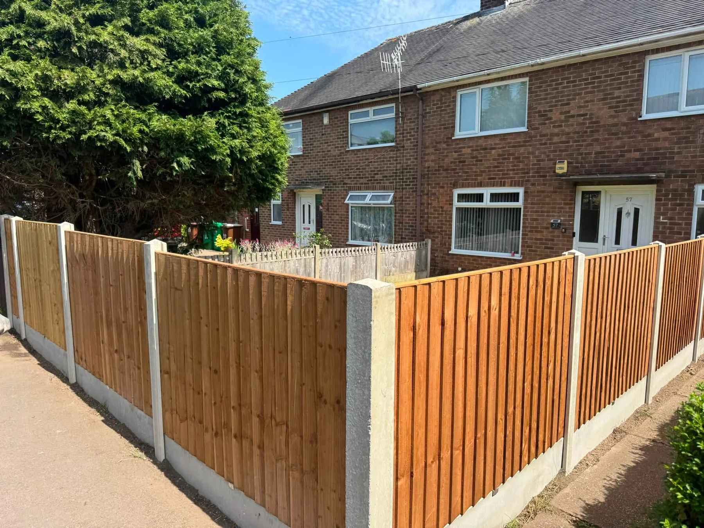
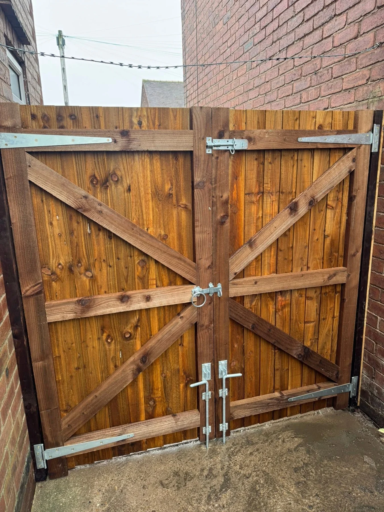
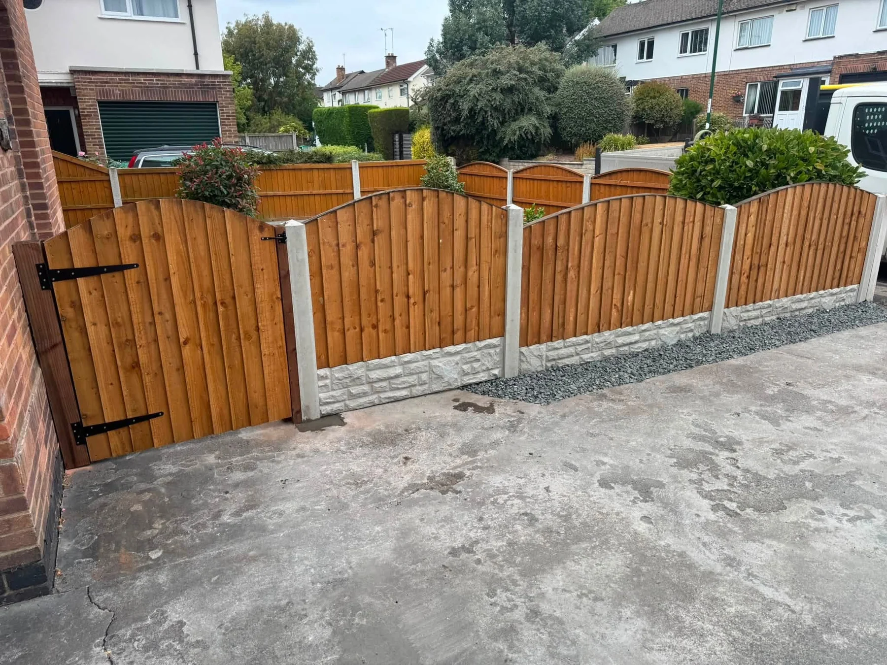

L.M FENCING · DERBY · MANSFIELD · NOTTINGHAM
Fencing & gates.
Supplied and fitted.
Garden fencing, timber gates and fence repairs in Derby, Mansfield and Nottingham.
20 YEARS’ EXPERIENCE · FULLY INSURED
From a single post
to a full boundary.
Luke and the team fit garden fencing and gates and take on smaller repairs. Tell us what you need for a free, no-obligation quote.
Request a free quote →
FEATURED WORK
A gate that fits your garden.
See a braced double gate and an arched gate fitted to match the garden fence.
Explore timber gates →

OUR PROJECTS
See our recent work.
See examples from our projects. Select an image to see it in full.
FACEBOOK RECOMMENDATIONS
What customers say.
100% recommend across 11 reviewson Facebook.
“Great work ethic, tidy, professional, finished to a very high standard.”
Laura Carr · Facebook
“They were quick to accept and complete the job and fairly priced.”
Henry Tomlinson · Facebook
“Tidy job by a polite professional team headed up by Luke.”
Stu Dringy · Facebook
BEFORE WE BEGIN
Good to know.
Do you offer free quotes?
Yes. Share your postcode and a few details about the work you have in mind.
What should I send for a quote?
Approximate dimensions and photos of the area help us understand the job. You can attach photos in WhatsApp.
Can you match my gate to my fence?
Send a photo of your fence and the gate opening so we can talk through suitable options.
FREE QUOTES
Tell us about
your project.
Send us your location, approximate measurements and a few details about the work. You can attach photos in WhatsApp before sending.
Serving Derby, Mansfield and Nottingham.
The form prepares a WhatsApp draft for you to review and send.